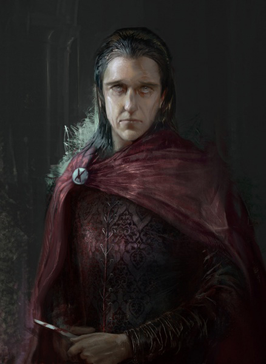
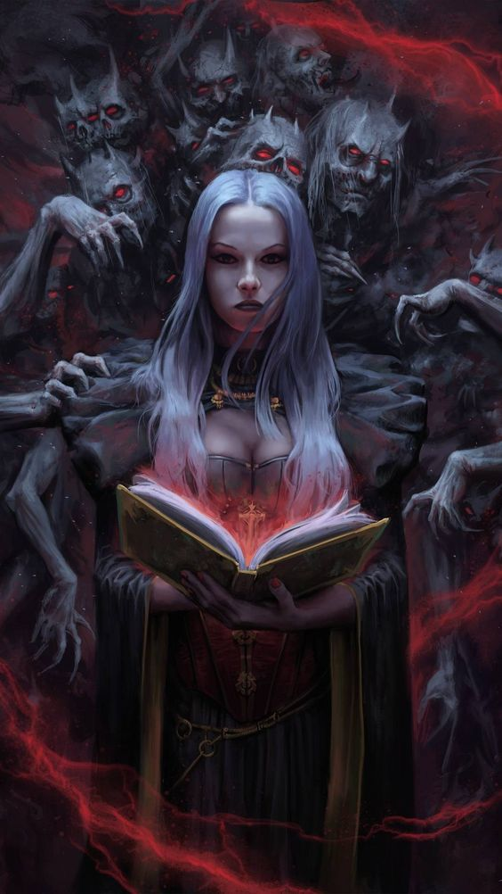
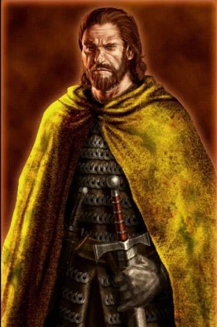
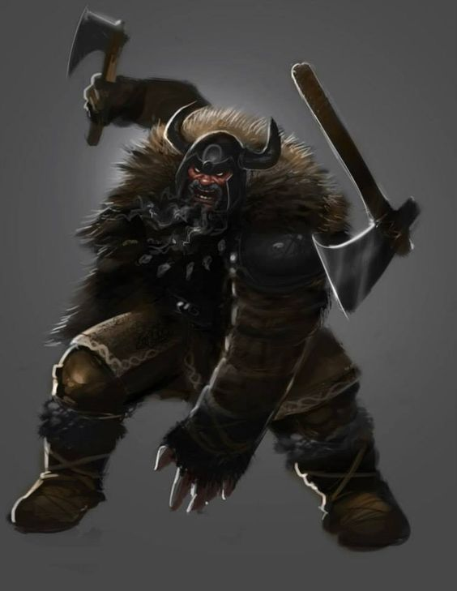
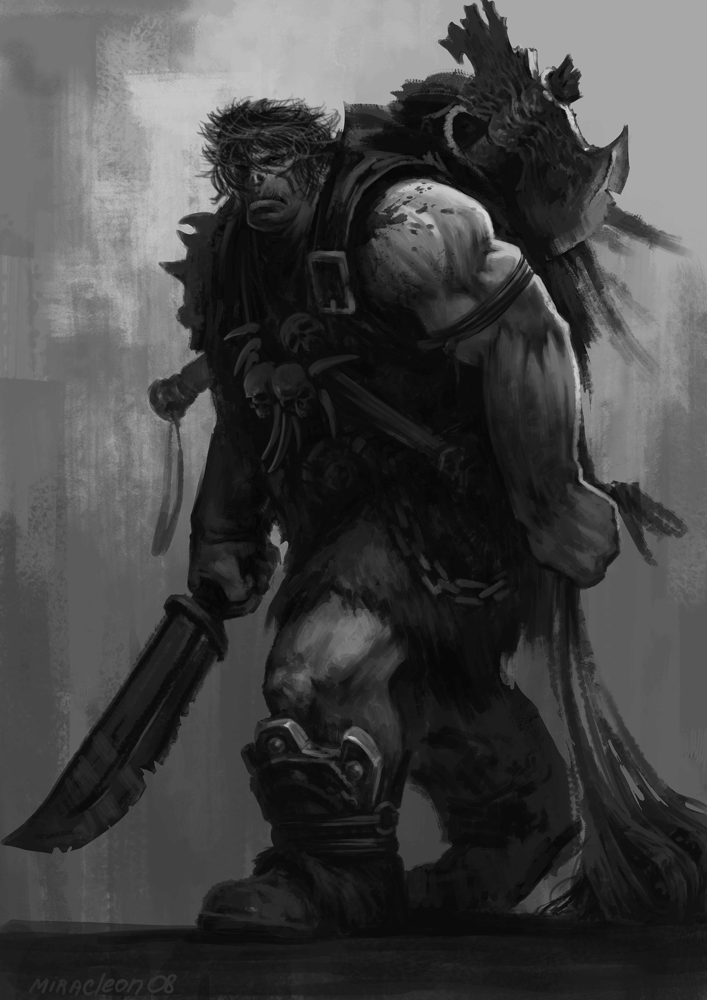
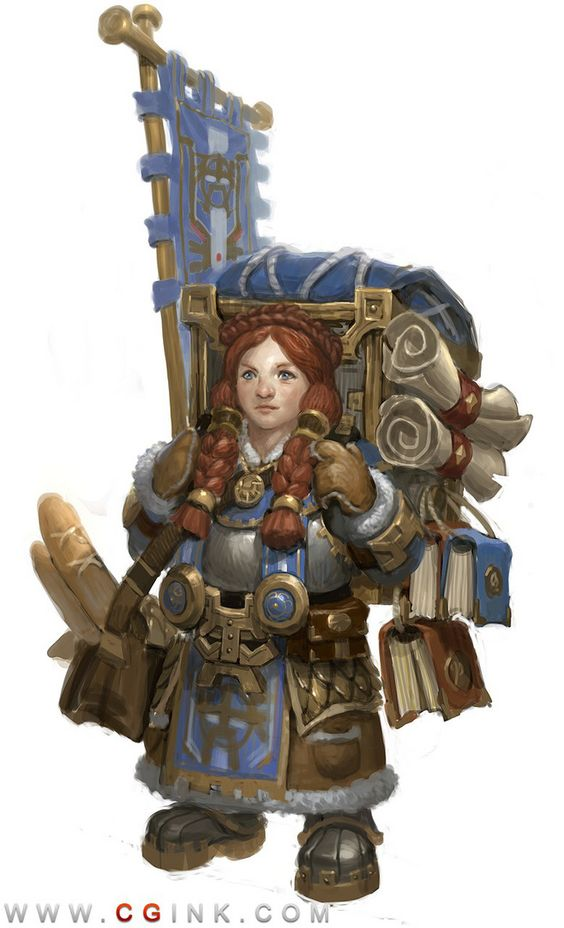

Personagens conhecidos em Portúmbria

Ellio "Arqueiro" Hotah
Bandido
Raça: Humano
Localização: Estalagem da Encruzilhada (morto)
Descrição:
O pequeno e fraco Ellio nasceu e cresceu como pedinte na cidade de Feira-Pobre, tendo como sua única companhia Lodrys, sua irmã. Desde pequeno era obrigado a roubar e a cometer pequenos crimes na cidade e embora fosse contra à violência, Ellio temia e jamais ia contra a sua irmã. Com 17 anos eles sairam de Feira-Pobre com outros jovens de má índole para viver de assaltos na estrada e roubos à estalagens. Em um dos assaltos à um grupo de caçadores da floresta, Lodrys foi capturada e feita refém com uma lâmina em seu pescoço, foi então que Ellio, que evitava entrar nos combates utilizou o arco longo de um dos caçadores para tirar a vida daquele que ameaçava sua irmã. Desde então os membros daquele grupo o apelidaram de arqueiro, mesmo Ellio não tendo nenhum treinamento ou habilidade com aquela arma. Meses depois o grupo foi preso em Rosa-Rubi e lá ficaram por anos até fugirem quando Rogart, Ogro e Sir atacaram a prisão. Ellio Arqueiro e Lodrys começaram a segui-los desde então.

Lodrys Hotah
Bandida
Raça: Humana
Localização: Estalagem da Encruzilhada (morta)
Descrição: Assim como seu irmão, Lodrys cresceu como pedinte em Feira-Pobre. Sempre deu ordens ao irmão, mesmo sendo mais nova. Diferente de Ellio Arqueiro, Lodrys adorava toda a adrelina e emoção que sentia quando praticava crimes e isso só piorou quando começou a se relacionar com um Tiefling de Minas Ambar, amante das artes das trevas e membro da Casa dos Hereges, uma seita de cultistas infernais daquela cidade. Com ele, Lodrys aprendeu os príncipios da Magia Negra e logo se tornou mais poderosa que seu amante. Foi presa juntamente com seu irmão e o resto do grupo em Rosa-Rubi, onde todos (exceto ela e o próprio Arqueiro) atrofiaram atrás das grades. Anos mais tarde "foi salva" da prisão por Rogart e seus homens e alí jurou fidelidade a ele.

Sir Arnolf Timburr
Bandido
Raça: Humano
Localização: Estalagem da Encruzilhada (morto)
Descrição: Nasceu como filho do meio na tradicional família de guerreiros Timburr, sendo assim desde muito novo foi treinado na arte da espada. Por sua idade, Arnolf não era tão adorado quanto seu irmão mais novo nem tão habilidoso quanto seu irmão mais velho, o que fez com que o garoto nutrisse uma raiva pela família desde muito cedo. Foi armado cavaleiro aos 26 anos, idade em que a maiorias dos cavaleiros já conquistam grandes honras e histórias. Serviu a guarda da cidade por apenas 1 ano e meio, quando foi expulso da ordem quando "descumpriu os votos de cavaleiro" em uma relação contra a vontade de uma ajudante de estalagem da cidade. Após ser expulso da guarda e cair em desonra, Arnolf se juntou a uma dupla de cruéis bandidos que vinham aterrorizando as estradas do Norte. Esses bandidos eram Ogro e Rogart. Esse último soube da sua história e o recrutou, continuou chamando-o de Sir para zombar tanto de Arnolf, quanto da Ordem de Cavalaria que o formou.

Rogart
Líder de Bandidos
Raça: Humano
Localização: Estalagem da Encruzilhada (morto)
Descrição:Não se sabe muito a respeito da origem de Rogart, somente que nasceu em uma vila extremamente pequena próxima a Wildgatt que hoje em dia não existe mais. Desde sempre foi brutal e cruel, tendo matado seu próprio pai aos 11 anos de idade. Rogart fez parte de diversos grupos do bandidos mas nunca teve amigos. Já mais velho, aos 32 anos de idade quando agia como mercenário no Tártaro em Minas Ambar, encontrou um pequeno e feio bebê abandonado em uma sarjeta. Rogart decidiu criar o garoto, mas não por amor ou por piedade, mas sim para cria-lo como uma verdadeira máquina de matar por isso não lhe deu nem mesmo um nome, chamando-o apenas de Ogro.

'Ogro'
Bandido
Raça: Humano
Localização: Estalagem da Encruzilhada (morto)
Descrição:Sobre alguns feitos da raça humana é melhor que não seja dito ou escrito, mas sim enterrado para que caia no esquecimento. Isso vale para os acontecimentos que transformaram Ogro no que é hoje. Apenas é necessário saber que essa criatura não deveria ser culpada pelos seus crimes, pois toda maldade feita por ele partiu primeiramente daquele que o criou e o transformou em uma verdadeira máquina de matar, sem remorso ou qualquer sentimento conhecido pelos humanos. Ogro foi torturado fisica e psicologicamente, provando que os homens podem ser a mais vil das criaturas que vagam pela terra.

Dinaf
Estalajadeira
Raça: Anã
Localização: Estalagem da Encruzilhada (morta)
Descrição:Dinaf nasceu como a filha mais nova de uma família de estalajadeiros da região central de Grunenwelt. Sempre se dedicou à família e se dedicou a cuidar da estalagem dos pais mesmo após o falecimento deles. A destemida anã permaneceu na Estalagem da Encruzilhada mesmo após seu irmão Orún partir para Portúmbria com a nova esposa e lá permaneceu até o fim dos seus dias, quando o local foi atacado por um grupo de cruéis bandidos que a violaram e a mataram a sangue frio.